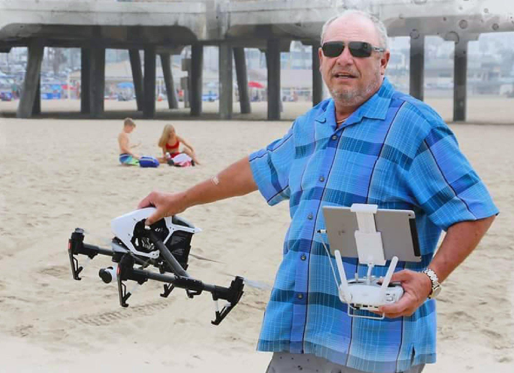
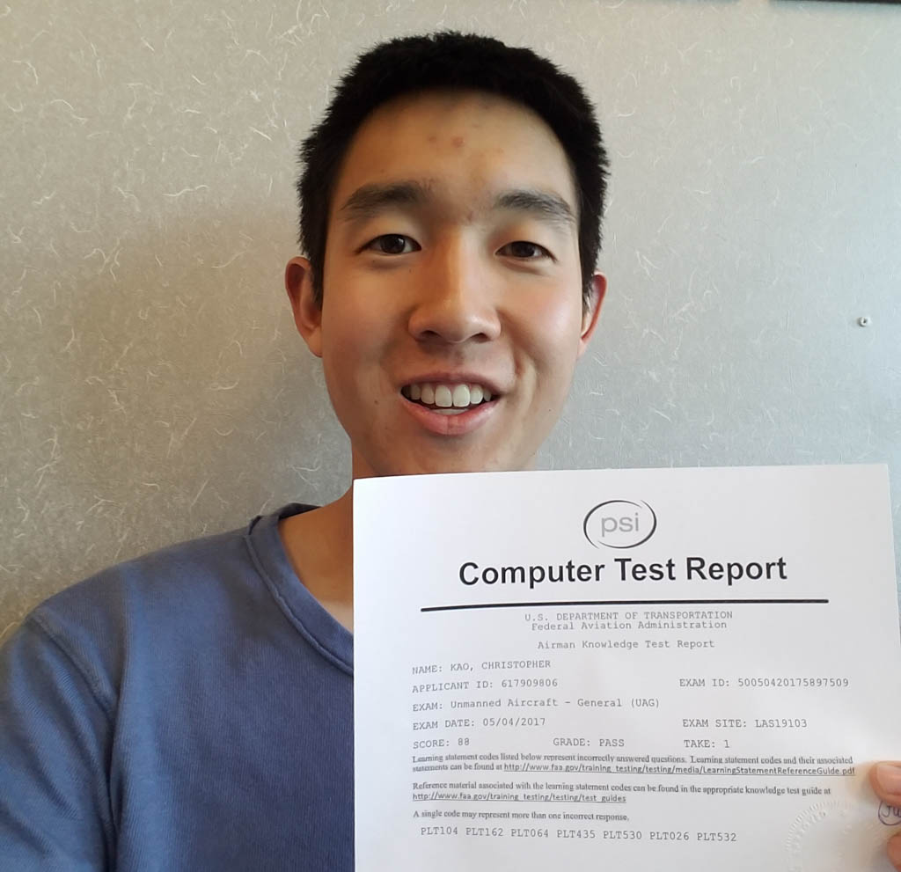
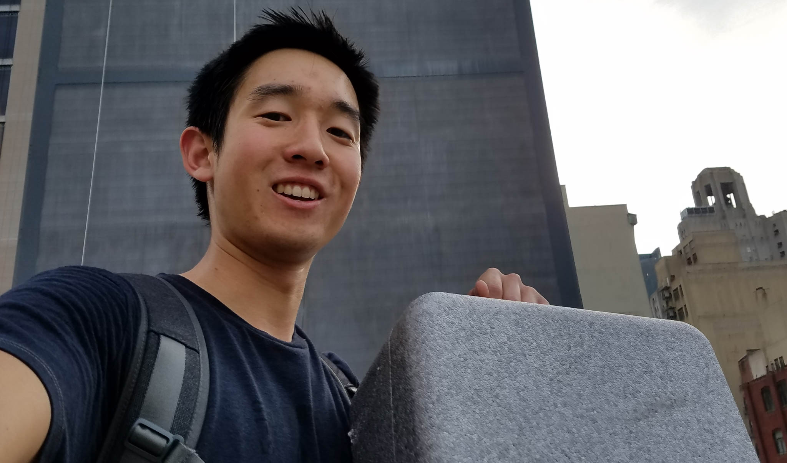

Questions & Answers
Question 1. How did you get started with drone photography?
To answer this, let me go a bit back to high school. Currently I'm a student at Penn. I just finished my third year. I've been flying drones for a year and half now, and the reason I got into drones is that I've always been very passionate about camera technology and video technology.
I grew up in Orange County, CA, in a a city called Huntington Beach, CA, which is a surf town. But it's only an hour away from LA, so there was a very strong Hollywood influence for me growing up. You couldn't escape it. My mom also worked in the fashion industry in downtown LA, so a lot of her clients were movie people, costume designers especially, so I'd always here about what was going on in Hollywood.
Drone video I made about a week after fixing up my first drone in December 2015.
Video I made of Huntington Beach in December 2014.
When I was a high school student at Troy High School, which is a magnet high school in Fullerton, CA, I really fell in love with photography and videography. I got my first camera, the Nikon D7000, as a freshman in high school. My dad has always been so into cameras, my uncle as well. It was a pretty clear choice that I would get a camera, which I was very fortunate about. My freshman summer of high school, I took a class called History of Motion Pictures. It was a class about the History of Hollywood and we actually made 3 short films over the summer. Originally I was going to take a film photography class, black and white, as my art elective. I'm really glad I didn't do that.
Every semester after that, for some reason or another, I would always have at least 1 or 2 video projects per semester. Classes like my English class where I had to make a Frankenstein video once, or classes like my Spanish class where we made a short film all in Spanish. Or even during my senior year, my AP Statistics class had a music video. And if you think about it, that's very odd for a math class to be making videos, and I think it's a lot of the Hollywood influence being right next to LA.
AP Statistics music video from April 2014.
I remember on bus rides home - I took the bus sometimes because I went to school 40 minute away by car and the bus ride took 3 hours. On the bus I'd have my AP Physics notes out because I'd have an exam the next day or the day after. And after 5 minutes, I'd pull out my phone and start reading through these Ken Rockwell articles. He's a very famous blogger, writes a lot about camera lenses and camera bodies, lighting equipment. I'd read up on follow focuses and matte boxes. I read about everything, every single thing. So I had a very clear passion, and when I got back to Penn, during my sophomore year my friend offered to sell me his old drone because he was upgrading. I bought the DJI Phantom 2 off of him for a fraction of its face value of $1,000 with a bunch of accessories. And that's really what got me into drone photography.
3-minute documentary film I made about how technology is used in education at Troy High School. Placed Honorable Mention amongst over 3,000 submissions for White House Film Festival.
Question 2. Why are you offering your photos as free downloads on www.phillybydrone.com?
Another question I'll often get is why do I make all of my photos available for download - at least the ones I have clients' permissions for. If you go to www.phillybydrone.com and scroll to the bottom of the page, I've made a lot of my photos available for download like the Comcast Center, City Hall, Logan Circle, I-95. A lot of times most professional photographers would charge money for any photos they make available. I'll tell you the story behind this and I think it'll make a lot of sense.
Recall that in December 2015 - when I bought the DJI Phantom 2 off of my friend Josh, he had upgraded and I bought it for a fraction of the price since it was kind of broken - I brought it back to California over winter break. I was so tired that night, but I jumped out of bed at 4am and spent 5 hours just fixing it up nonstop. Had it done at 9am, took it out to the park, and it was up and running.

Excitedly waking up at 4am to fix up my first drone
Anyways, so I got the drone, and a couple of days I'm flying in Huntington Beach. My dad loves the footage and he sees there's a lot of posts in the Huntington Beach Facebook community group, by this guy who calls himself Drone Eddie. Drone Eddie, of course, is not his full name. His full name is Eddie Paige. He's a 55 to 60 year old man. He is a really chill guy, was like a beach bum. He loved the beach so much. You'd either see him surfing there, but now he was a little older, so every morning he woke up at 5am to go shoot the Huntington Beach pier by drone. Instead of just hoarding the photos to himself, though, he took the photos and shared it online for people to see. I really admire that.
The reason I admire him is not just because of the fact that he shared his photos. I actually reached out to him after my dad told me about his drone, and he offered to take me to the beach to teach me how to fly my drone. And given that a year and a half ago, I didn't know much about drones, I very much appreciated it. It was a Friday afternoon in December, probably December 28 or so, maybe after New Years, around that time. Pretty warm because it's California. He took me down to the beach, there was a jetti which is basically a bunch of big rocks that protrude into the ocean. And he had 3 drones in his trunk, each one is like $3,000. And I had my little drone which I bought for $400. He offered to let me fly his drone, but I politely declined because I'd only flown for a couple of days, and if I crashed it would be really bad news.

Drone Eddie in front of the Huntington Beach Pier
Drone eddie took me out, and it was sunset time because it sets around 5 or 6pm during the winter. Drone Eddie taught me 3 things. First, is the lighting. Always go during the magic hour because that's the perfect time to shoot. Especially when you're at higher altitudes, the types of reflections you get from the air are different from what you'd see from the ground. From the air you'd see more harsh shadows during mid day. The second thing he taught me is to keep your drone low. Let's think about this for a second. If I wanted to fly low, I would just use my camera. Drone Eddie totally corrected this misconception. He taught me that what makes a photo compelling is having a clear subject in the foreground. When he took me to the beach, instead of flying 20 feet or higher, he taught me to keep the drone at 5 feet. Let's just see what it looks like if we just fly 5 feet above the ground and over the water. And he was absolutely right. The third thing he taught me was how to share photos with the community. Drone Eddie really engaged the community and sometimes you'd see him at the beach and he'd invite community members over to show them what flying drones was like. So I really respected him for that.
I went back to school a couple of weeks later in January 2016 because winter break was over, and flew drones. Several months later, I actually heard news that Drone Eddie passed away. And it was very sudden because when I was with him, he seemed like the healthiest, happiest, most energetic guy I'd ever met before. And it turns out he passed away from a heart attack while flying drones on the pier. And so that really touched me because he was my mentor for drones and taught me a lot of what I know today.
So when people ask me why do I make these photos available for the Philadelphia community...Everytime I wake up at 5am, it really reminds me of when Drone Eddie used to wake up really early to get sunrise and sunset, and he would always make his video footage available for anyone to use. And for me, getting those shots of the Comcast Tower, sharing it with the Philadelphia community, and getting everyone excited...it really reminds me of Drone Eddie and I think he'd be really proud of what I've done.
Question 3. How long have you been a certified drone pilot and what was the process like?
I've had my drone license for about 3 weeks now, as of May 21, 2017. I got it on May 4, 2017. In the past, it's been a very grey area. Before, anyone could fly a drone. You have to fly under 400 feet, you can't fly within 5 miles of an airport, you can't fly over large stadiums or over big crowds of people. FAA used to hold that if you want to make money off of your drone work, you actually have to have a real pilot license, where you'd actually have to have man-hours, not just taking an exam.
Recently the FAA changed it. I studied around 20 hours for what's called the FAA Part 107 commercial done license. I scheduled an appointment on site at the Aviation Academy of Maintenance, next to the Northeast Philadelphia Airpot. I went in on May 4th - the funny thing is this was in between finals. I actually had 4 final exams, 2 on that second week. I actually went to take my exam in between exams. People were joking, like, what Chris, 4 exams isn't enough for you?
I was just very excited for the exam. I studied for 20 hours, watched a lot of videos and readings, paid $150 to take a 2 hour exam in the testing facility computer, and I was nervous because if
I didn't pass the first time I'd have to pay another $150 and wait 2 and a half weeks. Luckily, I passed with a pretty high score, and I got my drone commercial pilot license that way.
Happily holding my passing FAA Part 107 exam result, May 4, 2017
Once I had my drone commercial pilot license that meant that I could fly my drone for commercial purposes, and I wanted to fund this DJI Inspire 1 drone that I wanted to get. I did some math, the only way to afford it would be if I started charging and earning a bit of money to help my dream come true. So I've been doing a lot of commercial real estate photography since, to fund this end of summer goal of getting this $4,000 DJI Inspire 1 drone.
Question 4. Who are your clients and how do they find you?
A lot of my clients have been real estate developers, primarily commercial developers in Center City. So I've been worknig with groups like Goldenberg Development, Brandywine, National Real Estate Development, several that I'm not allowed to name. But a lot of these developments are properties like 1213 Walnut, East Market, 1601 Vine, Aloft Hotel, City Hall renovations, FMC Tower, etc. Philly By Drone is actually very new. I just literally started about a week and a half ago (as of May 21, 2017). It's been a week and a half, and it's been getting a lot more traction than I originally thought. I had a lot of articles written about the Comcast Technology Center. I've had numerous clients rolling in, primarily development firms, architecture firms, and investment firms, with a lot of big real estate.
Posing for a selfie before shooting video of 1213 Walnut for Goldenberg Development
How do I find them? I think I'm very lucky that I've been covered by places like Curbed Philly, Philly Voice, NBC 10, and Philly Inquirer. I think a lot of the people who read these sources are real estate developers, so they read about me and contacted me. Another thing is I took a lot of photos of some of the buildings. I'd send them to some of the developers and I think once they saw the drone photo of what their property looks like, then they become a lot more convinced. Because a picture is worth a thousand words.
How else do clients find me? Depends a lot on customer satisfaction. So if I go out at 5am and it turns out it's cloudy, I'll take photos, but if I'm not perfectly happy I go out a separate day and I don't charge clients for that. I'll go out a separate day or at sunset, because I have to make sure it's a nice shot, customer satisfaction. I will spend several hours editing. I'm very picky on my HDR process to make sure that getting the best shot. Sometimes I'll even throw in a video or two to clients for free, to make sure they're happy because I think that's the most important part.
Question 5. What are your ambitions for Philly By Drone?
In terms of my ambitions for Philly By Drone, remember it's only been around for like a week and a half. I literally started this to fund my dream and hobby of getting the Inspire 1. Given that it's been exploding so quickly in such a short amount of time, I think I can start using some of the money to pay off my student loans. I'm in a lot of debt right now, and it'd be really nice to start paying it off, so once I start working and have a full time job, I won't have to pay it off for as long.
Currently I'm working at Curalate as a software engineering intern at 2401 Walnut. Curalate is a marketing tech startup.
Imagine if you're on Instagram and you see this really nice dress but you don't know what it is or where to find it. This happens to over 50% of the people. There's this dead weight loss where people want things but can't find them, and companies are not getting the mone for it. Curalate allows companies like Nordstrom, Saks Fifth, Forever 21 to actually tag these products and customers will find them. In terms of my long-term ambition, given that it's part time and during sunrise or sunset, I want to continue taking drone photos during the school year. I think I can expand from just doing commercial real estate to also looking at smaller buildings in the area as well.